一開始於本機IIS new 一個名為GuestBook站台詳細設定如下
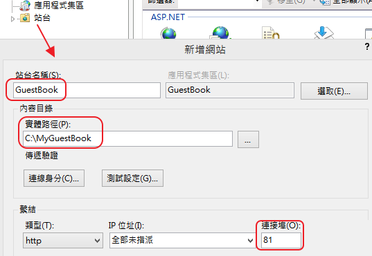
你會發現該站台的application pool為GuestBook
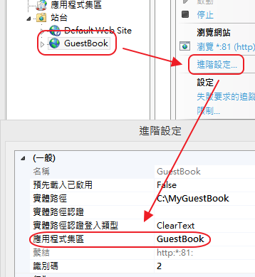
此名稱將會關連到LoginName為IIS APPPOOL\GuestBook
再來確認一下專案的connection String
檢查Web.config將會使用GuestBookContextConnection
<add name="GuestBookContextConnection" connectionString="Data Source=50BW\SQLEXPRESS;
Initial Catalog=MyGuestBook.Models.GuestBookContext;
Integrated Security=True;
MultipleActiveResultSets=True;
Application Name=EntityFramework"
providerName="System.Data.SqlClient" />
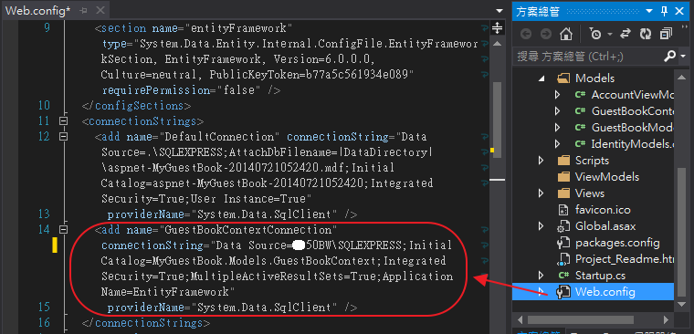
GuestBookContext.cs將會使用GuestBookContextConnection連線參數
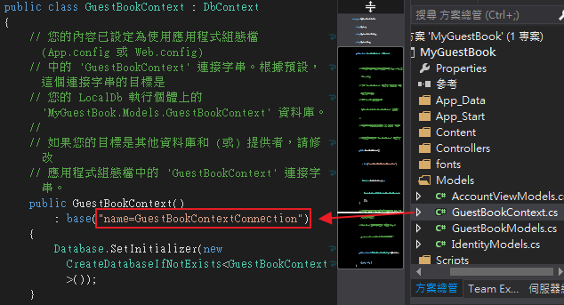
完成後，讓我們把專案Run起來。
卻發現找不到網頁內容
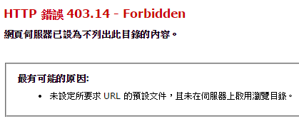
檢查發現IIS指錯實體路徑，重新修正後再啟動。
卻出現CREATE DATABASE 的權限遭拒錯誤，這時候真的就卡住了，
================================================================
'/' 應用程式中發生伺服器錯誤。
於資料庫 'master' 中，CREATE DATABASE 的權限遭拒。
描述: 在執行目前 Web 要求的過程中發生未處理的例外狀況。請檢閱堆疊追蹤以取得錯誤的詳細資訊，以及在程式碼中產生的位置。
例外狀況詳細資訊: System.Data.SqlClient.SqlException: 於資料庫 'master' 中，CREATE DATABASE 的權限遭拒。
================================================================
因為你不知道哪個東東(帳戶)沒有create db 的權限，
解決辦法下面會說明
先把問題簡單化，弄個只有讀取DB的專案來測試。
將一個簡單的MVC留言板專案經由IIS放進本機站台裡，但出現錯誤訊息
================================================================
'/' 應用程式中發生伺服器錯誤。
無法開啟登入所要求的資料庫 "MyGuestBook.Models.GuestBookContext"。登入失敗。
使用者 'IIS APPPOOL\GuestBook' 的登入失敗。
描述: 在執行目前 Web 要求的過程中發生未處理的例外狀況。請檢閱堆疊追蹤以取得錯誤的詳細資訊，以及在程式碼中產生的位置。
例外狀況詳細資訊: System.Data.SqlClient.SqlException: 無法開啟登入所要求的資料庫 "MyGuestBook.Models.GuestBookContext"。登入失敗。
使用者 'IIS APPPOOL\GuestBook' 的登入失敗。
================================================================
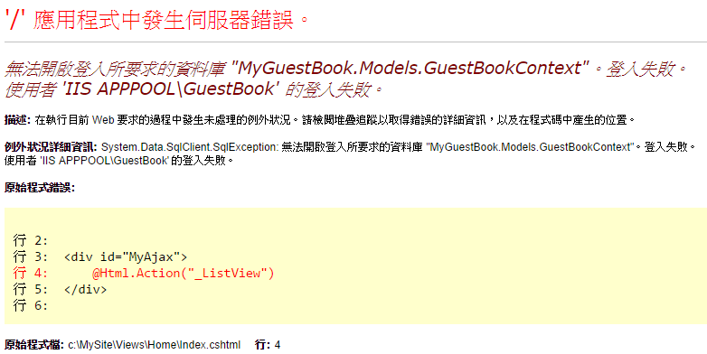
解決方法：
先拜讀保哥的介紹 IIS 7.5 的應用程式集區與新增的「虛擬帳戶」特性
知其可能與「應用程式集區(Application Pool)與身份識別(Identity)的關係」後
(其實還有更決定性的文章Publish ASP.NET MVC 4 App to IIS8)，
則在MSSMS裡新增一個登入角色，登入名稱就設為IIS APPPOOL\GuestBook，直接按確定新增即可。
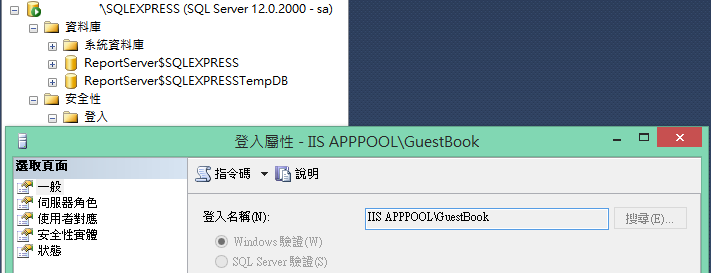
以下為我所嘗試失敗的新增方式
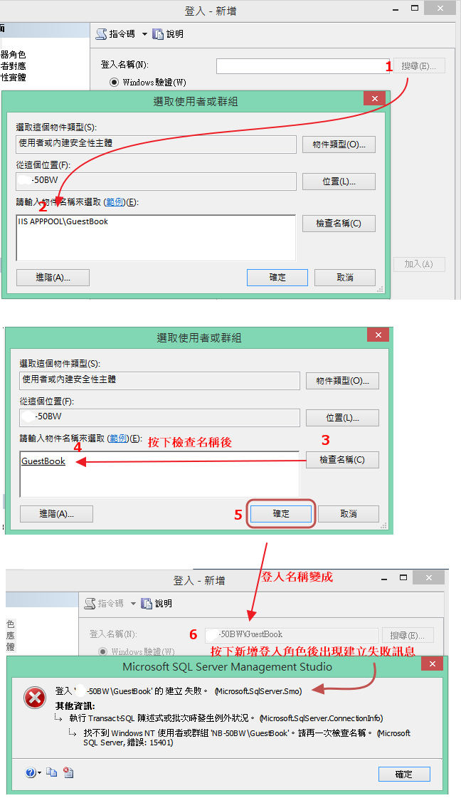
另一失敗畫面
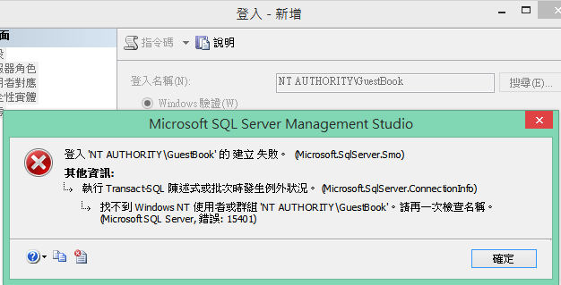
另外也可錄製SQL Server Profiler去查RUN起來的網站LoginName為何，下圖例子為IIS APPPOOL\MyLogin
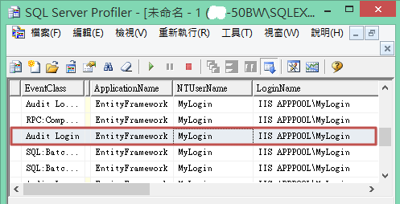
如果MVC專案裡有需要create db時，可能會遇到以下問題
================================================================
'/' 應用程式中發生伺服器錯誤。
於資料庫 'master' 中，CREATE DATABASE 的權限遭拒。
描述: 在執行目前 Web 要求的過程中發生未處理的例外狀況。請檢閱堆疊追蹤以取得錯誤的詳細資訊，以及在程式碼中產生的位置。
例外狀況詳細資訊: System.Data.SqlClient.SqlException: 於資料庫 'master' 中，CREATE DATABASE 的權限遭拒。
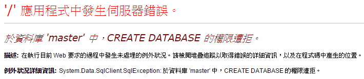
================================================================
則需要在登入屬性中的伺服器角色另外勾選dbcreator
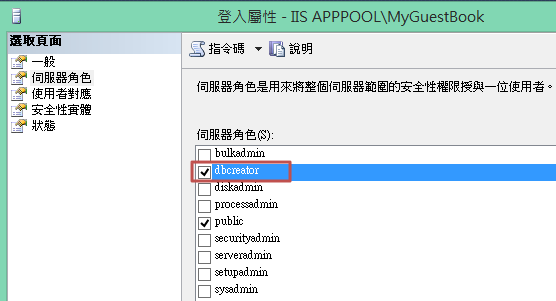
設定完後，再重新RUN網站
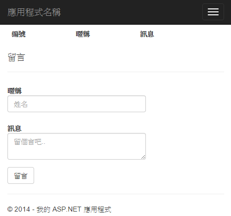
成功!!太令人感動了。
參考資料：
Publish ASP.NET MVC 4 App to IIS8
介紹 IIS 7.5 的應用程式集區與新增的「虛擬帳戶」特性
'IIS APPPOOL\DefaultAppPool' 的登入失敗的問題所在及如何解決